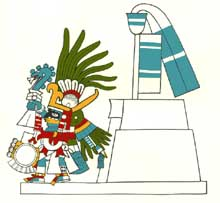

Huitzilopochtli
Huitzilopochtli, el "Colibrí Zurdo" es el dios de los mexicas que, como dios de la Guerra, encarnó al proveedor de sangre para el Sol. Bajo su tutela, este pueblo se convirtió en el más poderoso del ámbito mesoamericano durante el período Postclásico. Era hijo de Coatlicue, hermano de Coyolxauhqui, la Luna, y de las estrellas, los Centzon Huitznahua, todos ellos dioses de inspiración mexica y que fueron insertados en la cultura azteca posterior. Su lugar tan relevante en el Templo Mayor de Tenochtitlán da cuenta de la importancia que Huitzilopochtli tenía para los mexicas: la guerra y el tributo como parte del sustento económico.
 La imagen de Huitzilopotchli proviene del Códice Borbónico. Huitzilopochtli no se representaba como los demás dioses. De hecho en las excavaciones del Templo Mayor de Tenochtitlán, a pesar de la importancia de este dios, no se ha encontrado una sola figura con su imagen, sólo objetos relacionados con él.